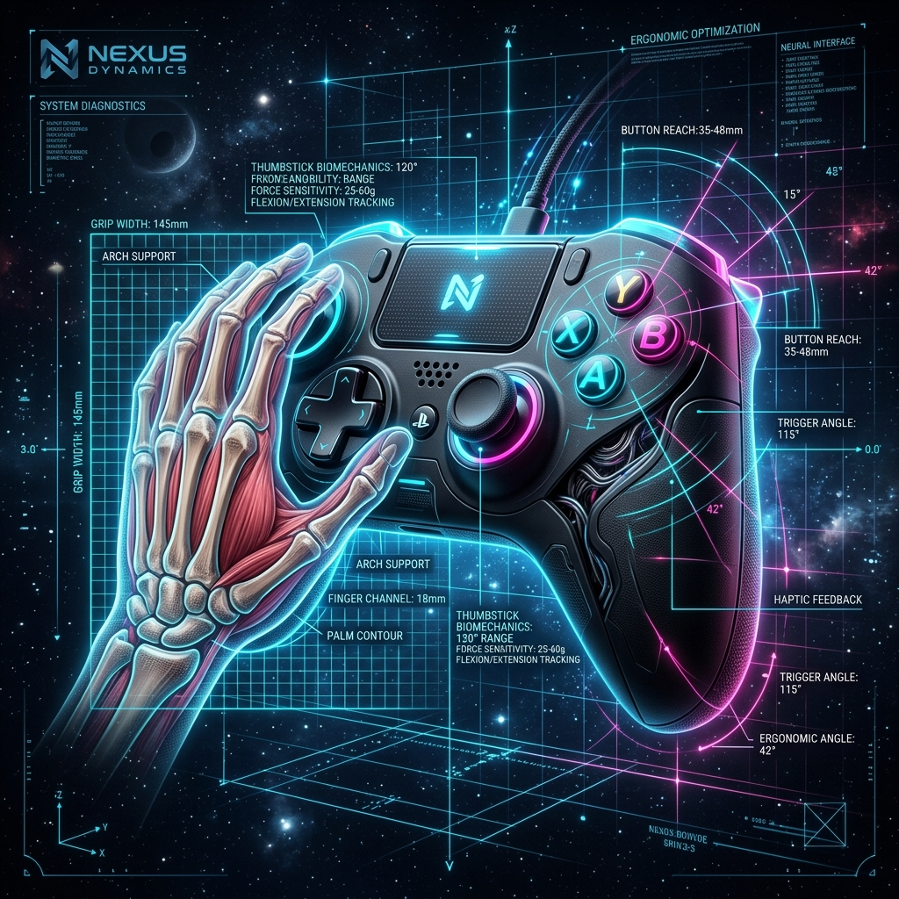
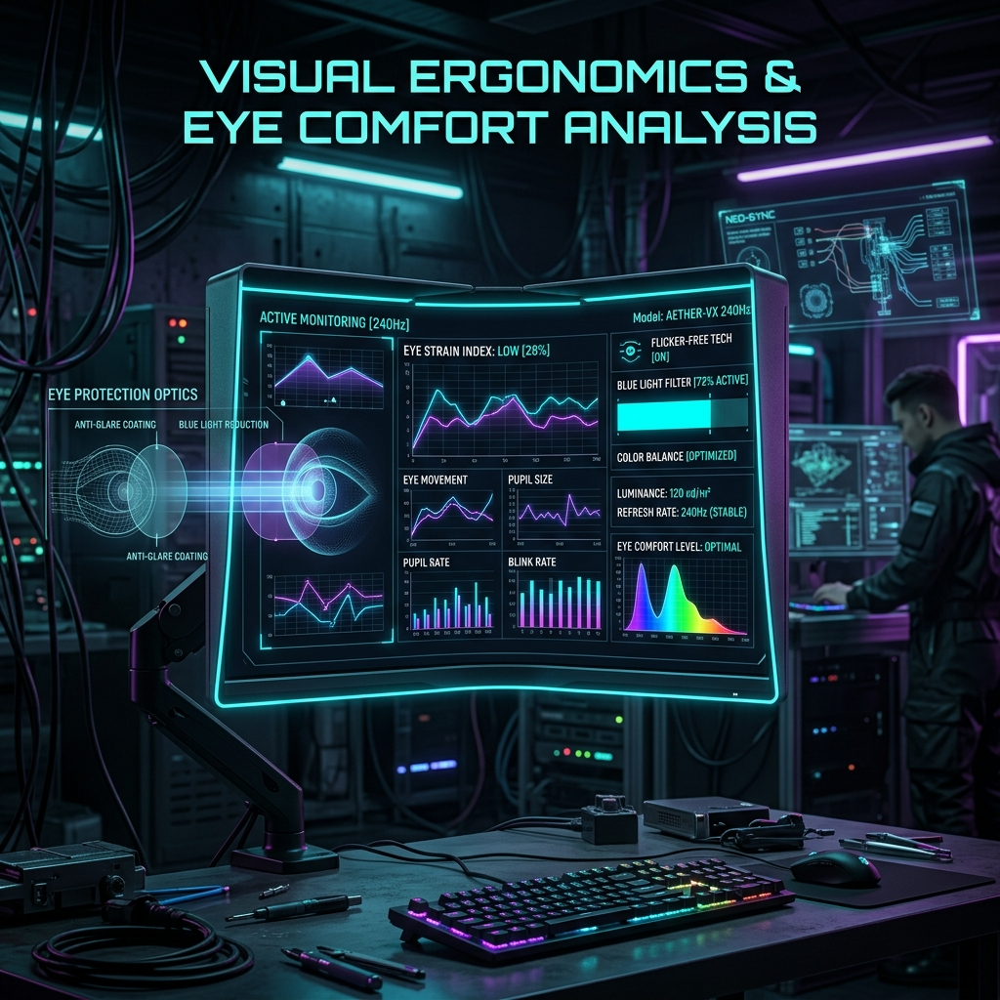

Basado rigurosamente en Mondelo, P. R. (2001). Ergonomía 4: El trabajo en oficinas adaptado al ecosistema gamer.
SLIDE 02 // FUNDAMENTOS02 / 12
Ergonomía y su Rol en el Ecosistema Gamer
De la Oficina (Mondelo, 2001) a la Estación de Juego del Siglo XXI
🎯 Definición Fundamental (Mondelo, 2001)
Según Mondelo (2001, p. 15), la ergonomía tiene por objetivo fundamental "adaptar las máquinas, el entorno de trabajo y los objetos a las capacidades fisiológicas, anatómicas y cognitivas del ser humano", evitando que el usuario sea quien fuerce su biología a la máquina.
⚡ La Doble Dimensión Ergonómica del Gaming
Carga Biomecánica / Física: Mantener posturas estáticas prolongadas, micro-movimientos articulares repetitivos (muñeca y pulgar) y demandas antropométricas de agarre.
Carga Cognitiva / Senso-Motora: Procesamiento visual continuo de alta velocidad, coordinación visomanual y reducción de latencia en la toma de decisiones competitiva.
🔄 Bucle Cibernético Humano-Videojuego
La ergonomía optimiza la interfaz de entrada y salida para maximizar el rendimiento y prevenir lesiones.
SLIDE 03 // HCI & CANALES03 / 12
Canales de Interacción Humano-Computador (HCI)
Taxonomía Ergonómica de Entradas (Input) y Salidas (Output) en Gaming
🕹️ Dispositivos de Entrada (Input Devices)
Traducen la intención motora del jugador al entorno virtual. Deben minimizar la fatiga muscular y maximizar la resolución de captura:
Dispositivo
Canal Fisiológico
Prioridad Ergonómica
Gamepad / Mando
Bimanual pulgar-índice
Antropometría P5-P95, agarre simétrico
Ratón Gamer
Antebrazo / Muñeca
Precisión sub-milimétrica, bajo peso
Teclado Mecánico
Falanges de 10 dedos
Fuerza de actuación controlada (45g)
🖥️ Dispositivos de Salida (Output Devices)
Estimulan los receptores sensoriales del jugador. El diseño ergonómico evita la saturación sensorial del canal visual principal:
Canal Visual (PVD - Monitores/VR): Representa el 80% de la carga cognitiva. Requiere altas tasas de refresco para evitar centelleos asténicos.
Canal Auditivo (3D Binaural): Alivia el canal visual transmitiendo posicionamiento espacial de eventos mediante HRTF.
Canal Somatosensorial (Háptica): Transmite vibración y resistencia tensional directamente a mecanoreceptores palmares.
SLIDE 04 // BIOMECÁNICA DEL GAMEPAD04 / 12
Mando de Consola: Anatomía y Antropometría
Aplicación de la "Palanca de Control" de Mondelo (2001, p. 47) al Gamepad Moderno
📏 Antropometría Percentil 5 a 95 (Mondelo p. 47)
Mondelo establece que todo órgano de control manual debe acomodar desde el Percentil 5 femenino (manos pequeñas, ~16 cm de longitud palmar) hasta el Percentil 95 masculino (~20.5 cm).
Bimanualidad Simétrica vs Asimétrica: Disposición de joysticks (alineados tipo PlayStation vs desplazados tipo Xbox) para optimizar la pronación neutral de la muñeca.
Área de Alcance del Pulgar (Thumb Zone): El pulgar realiza abducción y flexión constante; los sticks deben situarse dentro del radio natural de rotación carpometacarpiana (< 45 mm).
⚙️ Biomecánica de Gatillos y Botones
Los gatillos posteriores (L2/R2) aprovechan la fuerza de flexión del dedo índice/medio sin desestabilizar el agarre palmar (fuerza óptima de activación: 1.5 a 3.0 N).

BIOMECÁNICA DEL GAMEPAD P5-P95'">
FIG 01: Análisis antropométrico de agarre y arcos articulares del pulgar
SLIDE 05 // PC GAMING ERGONOMICS05 / 12
Teclado y Ratón: Prevención y Precisión en PC
Inclinación, Switches Mecánicos y Biomecánica en el Combo Teclado-Ratón (Mondelo p. 43)
⌨️ Requisitos Ergonómicos del Teclado (Mondelo p. 43)
Inclinación Óptima (0° a 15°): Evitar extensiones dorsales excesivas de la muñeca. El uso de patas traseras muy altas aumenta la presión en el túnel carpiano.
Switches Mecánicos Lineales: Fuerza de actuación baja (45g - Red switches) previene el microtraumatismo repetitivo al no requerir tocar fondo con fuerza.
Reposamuñecas Acolchado: Mantiene la alineación neutra (0° de extensión/flexión).
📐 Ángulos de Desviación de Muñeca
🖱️ Biomecánica del Ratón Gamer & APM
En eSports competitivos se superan las 300 APM (Acciones por Minuto). El ratón debe ajustarse a los 3 tipos antropométricos de agarre:
Estilo de Agarre
Contacto Palmar
Impacto Ergonómico
Palm Grip
100% palma en dorso
Menor fatiga articular, mayor control de brazo
Claw Grip
Palma posterior + dedos garra
Alta velocidad de clic, estrés intermedio
Fingertip
Sólo yemas de los dedos
Máxima micro-precisión, fatiga intrínseca rápida
SLIDE 06 // PVD & SALUD VISUAL06 / 12
Confort Visual en Pantallas de Visualización (PVD)
Prevención de Astenopia, Tasas de Refresco (144Hz+) y Control de Contraste (Mondelo p. 63)
👁️ Astenopia y Fatiga Visual en PVD (Mondelo p. 63)
La fijación sostenida en PVD reduce la frecuencia del parpadeo humano de 18-20 a menos de 5 parpadeos/minuto, induciendo sequedad ocular, tensión en el músculo ciliar y cefalea.
🖥️ Parámetros Ergonómicos de Monitores Gamer
Tasa de Refresco Elevada (144Hz - 240Hz+): Elimina el micro-centelleo (flickering) indetectable conscientemente pero que causa estrés retiniano severo a 60Hz.
Anti-deslumbramiento (Matte Coating): Evita reflejos especulares de fuentes lumínicas del entorno.
Distancia Visual Óptima: 50 cm a 70 cm con el borde superior del monitor a nivel u 8° por debajo del eje visual horizontal.

ANÁLISIS DE CONFORT VISUAL Y PVD'">
FIG 02: Geometría visual, línea de mira y espectro lumínico en PVD
SLIDE 07 // PATOLOGÍAS Y SALUD07 / 12
Riesgos Biomecánicos y Lesiones del Gamer
Microtraumatismos Repetitivos (RSI) y Estratagemas Clínicas de Prevención
⚠️ Cuadro Clínico de Patologías en Gaming
Patología
Etiología Gamer
Síntomas Clínicos
Túnel Carpiano (STC)
Compresión nervio mediano por apoyo duro e hiperextensión
Parestesia en pulgar/índice, pérdida de fuerza de agarre
Tenosinovitis De Quervain
Sobreuso del pulgar en joysticks y botones de mando
Dolor agudo en la base del pulgar (tendón abductor)
Cervicalgia ("Gamer Neck")
Inclinación craneal anterior (>15° hacia el monitor)
Sobrecarga de trapecios, vértigos miofasciales
🛡️ Medidas de Prevención Ergonométrica
Regla 20-20-20 Visual: Cada 20 minutos de juego, mirar a un objeto a 20 pies (6 metros) durante 20 segundos para relajar la musculatura ciliar.
Micro-descansos Activos: Pausas de 5 minutos cada hora con estiramientos de flexores y extensores del carpo.
Sillas Ergonómicas ISO 9241: Soporte lumbar ajustable que mantenga la lordosis natural de la columna en ángulos cadera-rodilla de 90°-100°.
SLIDE 08 // ERGONOMÍA DE INTERFAZ (UI/UX)08 / 12
Ergonomía del Software en Videojuegos
Adaptación de los 7 Principios de Diálogo (Mondelo p. 60 / ISO 9241-110) a UI/UX Gamer
💡 Principios 1 al 4 (ISO 9241-110 / Mondelo)
1. Adecuación a la Tarea: El HUD del juego muestra sólo información crítica para la supervivencia/misión sin sobrecargar el campo visual central.
2. Autodescriptividad: Iconos y marcadores con affordance clara (ej. barra roja = salud, icono de escudo = armadura).
3. Controlabilidad: Permiso absoluto del jugador para remapear teclas (keybindings) e invertir ejes de cámara.
4. Conformidad con Expectativas: Respeto por estándares universales (W-A-S-D para movimiento, Esc para menú).
🚀 Principios 5 al 7 (ISO 9241-110 / Mondelo)
5. Tolerancia a Errores: Confirmaciones claras antes de sobrescribir partidas o destruir ítems valiosos ("Undo" amigable).
6. Individualización: Escala personalizable del tamaño del HUD y modos de accesibilidad para daltónicos (Protanopia/Deuteranopia).
7. Facilidad de Aprendizaje: Diseño de niveles tutoriales progresivos que introducen mecánicas sin manuales extensos de texto.
SLIDE 09 // FEEDBACK SENSORIAL AVANZADO09 / 12
Retroalimentación Háptica y Audio Espacial 3D
Descarga Cognitiva del Canal Visual mediante Estimulación Multimodal
🎮 Háptica de Alta Definición (HD Haptics)
A diferencia de los motores de contrapeso tradicionales (rumble), los actuadores lineales de voz (ej. DualSense) reproducen ondas hápticas con frecuencias exactas, informando al tacto sobre superficies (arena, hielo, metal) sin requerir verificación visual.
Gatillos Adaptativos: Modulan la impedancia física en tiempo real para indicar atasco de armas o tensión de arco, transmitiendo estado del sistema directamente al sistema neuromuscular.
🎧 Audio Espacial 3D Binaural (HRTF)
La función de transferencia relacionada con la cabeza (HRTF) simula la difracción acústica en el pabellón auricular humano para ubicar sonidos en una esfera 360° perfecta.
Beneficio Ergonómico: Permite localizar la trayectoria de un enemigo o proyectil por vía auditiva pura, reduciendo drásticamente el tiempo de exploration visual e incrementando la conciencia situacional.
SLIDE 10 // INNOVACIÓN Y ACCESIBILIDAD10 / 12
El Futuro de la Interacción: VR, BCI y Accesibilidad
Fronteras Ergonómicas en Realidad Virtual, Neurointerfaz y Diseño Inclusivo
🥽 Realidad Virtual (VR) y Cinetosis
La Cinetosis (Motion Sickness) en VR ocurre por conflicto sensorial: la retina percibe aceleración en el espacio tridimensional mientras que el sistema vestibular (oído interno) reporta reposo estático.
Solución Ergonómica: Latencia motion-to-photon inferior a 20 milisegundos y tasas sostenidas de 90Hz+ para sincronización sensorial perfecta.
🧠 Interfaces Cerebro-Computador (BCI)
Lectura no invasiva de señales de electromiografía de superficie (EMG) e impulsos corticales (EEG) para activar comandos motrices a velocidad sináptica directa.
♿ Accesibilidad Universal: Xbox Adaptive Controller
El paradigma ergonómico moderno es la inclusión universal. Dispositivos como el Xbox Adaptive Controller rompen el estándar del gamepad tradicional, ofreciendo puertos jack de 3.5 mm para conectar interruptores de pie, soplado, palancas modulares y botones gigantes adaptados a cualquier diversidad funcional motora.
SLIDE 11 // SÍNTESIS ACADÉMICA11 / 12
Conclusiones: El Balance entre Salud y Rendimiento
La Ergonomía como Eje Central de la Interacción Humano-Videojuego
🏆 Síntesis de los Hallazgos
1. De la Oficina al Setup Gamer: Las leyes antropométricas y biomecánicas de Mondelo (2001) son totalmente transferibles y aún más críticas en el gaming de alto rendimiento debido al volumen e intensidad de inputs por segundo.
2. Sinergia Hardware-Software: Un periférico perfecto no compensa una interfaz confusa; la ergonomía exige armonía total entre el mando físico y los principios de diálogo del software (ISO 9241-110).
3. Salud y Rendimiento no son Opuestos: El confort ergonómico previene lesiones graves (STC, tendinitis) mientras maximiza directamente el APM, la precisión competitiva y la inmersión del jugador.
SLIDE 12 // BIBLIOGRAFÍA APA 7ª ED.12 / 12
Referencias Bibliográficas
Fuentes Académicas y Normativas Internacionales (Formato APA 7ª Edición)
📚 Mondelo, P. R., Gregori, E., & Barrau, P. (2001). Ergonomía 4: El trabajo en oficinas. Alfaomega Grupo Editor / Edicions UPC. (Material obligatorio base del estudio).
📚 ISO 9241-410:2008.Ergonomics of human-system interaction — Part 410: Design criteria for physical input devices. International Organization for Standardization.
📚 ISO 9241-110:2020.Ergonomics of human-system interaction — Part 110: Interaction principles. International Organization for Standardization.
📚 Norman, D. A. (2013). The Design of Everyday Things: Revised and Expanded Edition. Basic Books.
📚 Shneiderman, B., & Plaisant, C. (2010). Designing the User Interface: Strategies for Effective Human-Computer Interaction (5th ed.). Addison-Wesley.
➔Espacio Siguiente⬅ AnteriorEsc Vista MapaA Autoplay